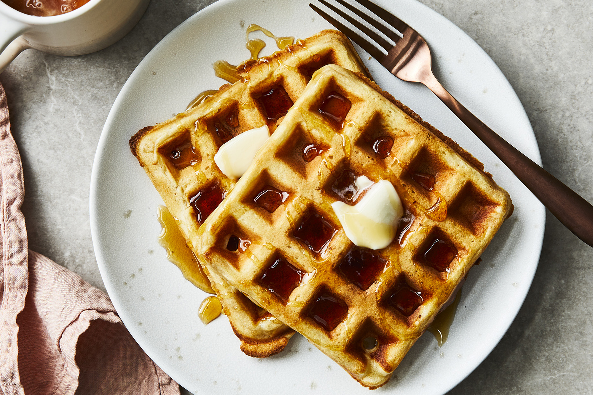

Classic Waffles

A tasty waffle perfect for the morning
In my opinion, what makes this waffle recipe the best is the batter. It is quick and easy to prepare and you can mix it all up with a simple fork.
These waffles are crispy on the outside and fluffy on the inside. Also, what sets the taste through the roof in the hint of butter and vanilla throughout.
Ingredients
- 2 cups all-purpose flour
- 1 teaspoon salt
- 4 teaspoons baking powder
- 2 tablespoons white sugar
- 2 eggs
- 1½ cups warm milk
- ⅓ cup butter, melted
- 1 teaspoon vanilla extract
Directions
- In a large bowl, mix together flour, salt, baking powder and sugar; set aside. Preheat waffle iron to desired temperature.
- In a separate bowl, beat the eggs. Stir in the milk, butter and vanilla. Pour the milk mixture into the flour mixture; beat until blended.
- Ladle the batter into a preheated waffle iron. Cook the waffles until golden and crisp. Serve immediately.